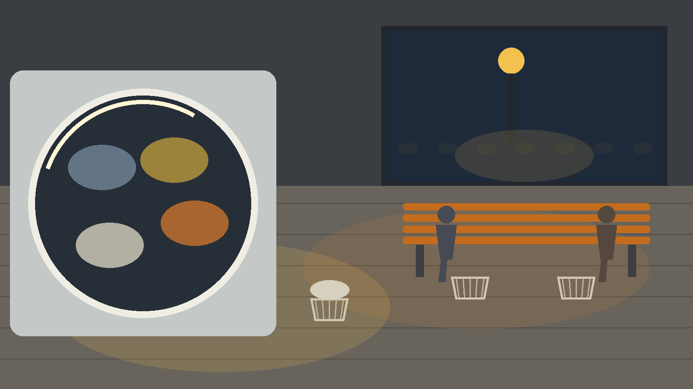
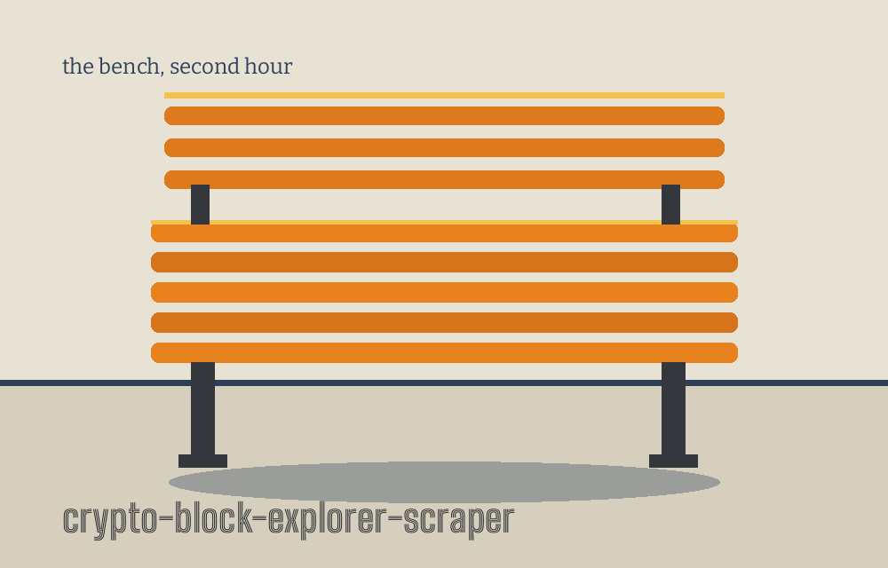
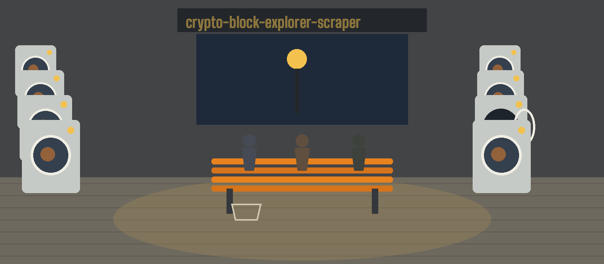
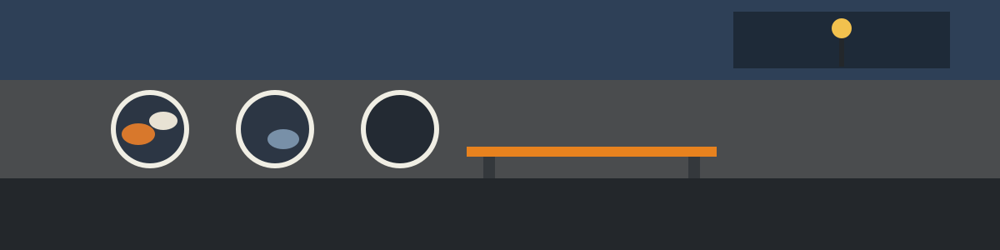

crypto-block-explorer-scraper: The All Night Laundrette Philosophers
Theme: The All Night Laundrette Philosophers. Headings in Big Shoulders Inline Text SC, reading text in Bitter.



Two Sources, One Joined Printout
An address run takes one address, asks Etherscan for its transaction list in ascending order across the full block range that the code sets, asks Blockchair for the same address through its address dashboard, and prints whatever comes back as indented JSON under two possible keys, one for each source. A run answered by only one source shows only that source key and carries no note saying the other is missing. Etherscan will not answer at all unless the caller has set the environment variable whose name is ETHERSCAN_API_KEY, a name this page prints while printing no value for it, whereas Blockchair is asked without any such credential.
Fetch This Transaction From Both Sources
A transaction run takes one hash, asks Etherscan for it as a transaction through its proxy route rather than spending it as an address, and asks Blockchair for it through its transaction dashboard. The same joining rule, the same two keys, and the same ending apply. Both kinds of run share one clock for pacing, set at five calls a second for Etherscan and two for Blockchair, which means a call to one source also delays the other, and every request is given ten seconds before it is allowed to fail.
The Side Work Is Not the Scraping
A password can be hashed, which uses the PBKDF2HMAC construction with the SHA256 algorithm, an iteration count of 390000, a fresh random salt when none is supplied, and a derived length of 32, and which prints the salt and the resulting hash as encoded text, named here as kinds and never reproduced. A password can be checked against a stored salt and a stored hash, which takes three values after the flag, prints a success line when they agree, and prints a failure line and exits 1 when they do not. A message can be encrypted and decrypted under the AES algorithm in CBC mode with PKCS7 padding, where encryption mints a fresh initialisation value, places it ahead of the ciphertext, and encodes the whole as one string, and decryption separates that value again at the same fixed sixteen bytes, with either failure printing a short check your key message and exiting 1. A key can be generated, which prints a fresh 256 bit AES key in encoded form, again named as a kind and never shown.
One Option Runs at a Time
Only one branch runs on any single invocation, because the programme tests its options in a fixed order, address before hash, hash before the password and message work, and key generation last among them. A run with no option at all simply prints the help text.
When Both Sources Fail, the Run Fails
When both sources fail, the run logs that no data could be fetched from either source and exits 1 rather than printing an empty result as though the address were quiet. Installation is shown in the preserved record below as the README prints it, clone line first, with the fault in that line flagged in a note directly beneath it on this page and corrected nowhere. The requirements file asks for the cryptography and requests libraries, the working form is python3 main.py followed by one of the options in the preserved record, and the licence is the MIT License held in a separate file whose holder line gives a pen name and a single initial.
Install line, flagged
Flagged where it stands, and corrected nowhere in this README: the clone line above names the organisation without the hyphen its account carries. The website records the fault in a note beneath the same line.
Record preserved from the README
# crypto-block-explorer-scraper
Scrapes and aggregates data from multiple block explorer APIs (e.g., Etherscan, Blockchair) for a given cryptocurrency address or transaction hash, providing a consolidated view of its activity and history. - Focused on Basic cryptographic operations
## Install
`git clone https://github.com/ShadowGuardAI/crypto-block-explorer-scraper`
## Usage
`./crypto-block-explorer-scraper [params]`
## Parameters
- `--address`: The cryptocurrency address to search for.
- `--txhash`: The transaction hash to search for. Queried as a transaction at both APIs, not as an address.
- `--password`: Password to use for crypto operations. WARNING: Use with extreme caution. Avoid using plaintext passwords on CLI, consider using other secure methods.
- `--hash_password`: Hashes a password. Requires --password.
- `--verify_password`: No description provided
- `--encrypt`: No description provided
- `--decrypt`: No description provided
- `--generate_key`: Generates an AES key.
## License
Copyright (c) ShadowGuardAI
Facts from the code, stated in the prose
This record names: ETHERSCAN_API_KEY, Etherscan, Blockchair, PBKDF2HMAC, SHA256, 390000, 32, AES, CBC, PKCS7, 256 bit, five calls a second for Etherscan, two calls a second for Blockchair, ten seconds, exits 1, python3 main.py, cryptography, requests, MIT License.